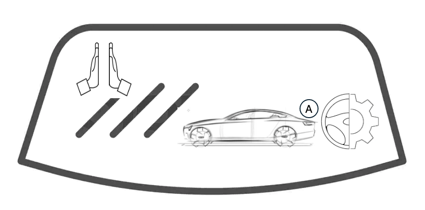
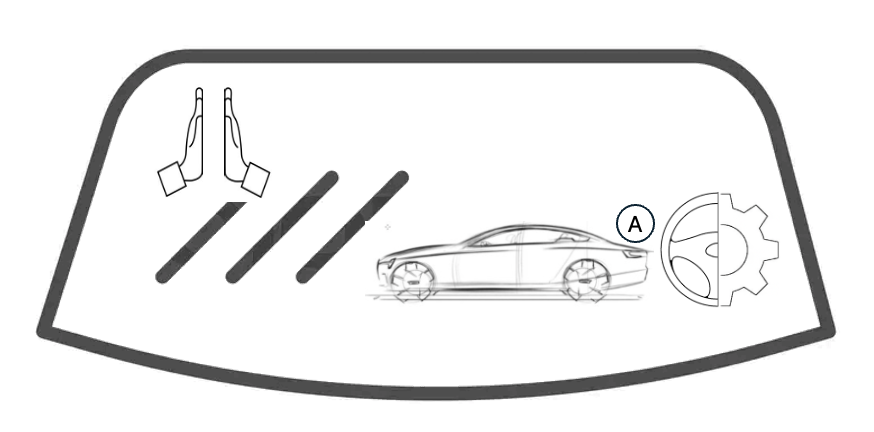
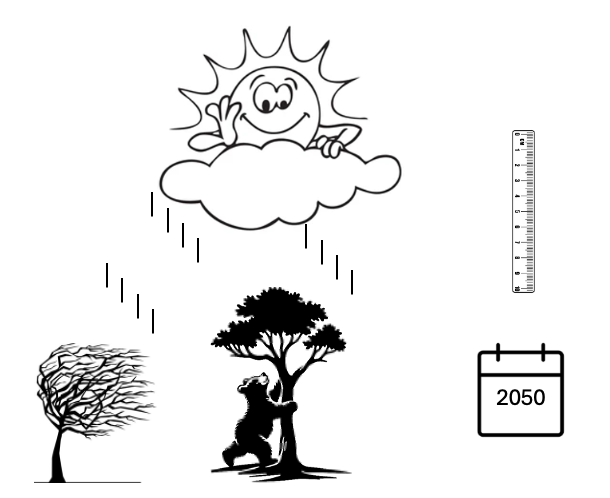

Currently, I focus on
Bridging the gap between business vision and complex technology execution.
I drive Revenue Lifecycle platform designs, ensuring high-engagement RLM works smoothly with foundational ERP systems.
Currently, I focus on
Bridging the gap between business vision and complex technology execution.
I drive Revenue Lifecycle platform designs, ensuring high-engagement RLM works smoothly with foundational ERP systems.
HP and SAP set my early direction, and my thinking truly evolved as I navigated the Salesforce revenue cycle.
I approach the transaction lifecycle
through three lenses: velocity for the sales team, validation during the order process, and finality for revenue recognition.
I ensured front-end speed without ever compromising the back-end financial ledger.
What I <enjoy> most—and why I’m <excited> about this role—is
<delivering> successful Revenue Lifecycle projects while solving the missing link between sales agility and operational stability.
I consistently <design> architectures that don’t just work today, but are built to scale and endure.
I’m happy to go deeper into any part of the journey,
or we can start with my recent work at Thrive, a nonprofit. Where would you like to begin?
| 👓 My First Insight (Thrive) |
|---|
|
I want to tell you a story about how I helped start a club called Thrive. I was not part of it as a founder or oranizer, but I helped them becuase it is run by Students from two local universities. They run it like a high-speed business across two different universities. They conduct "Events” to make money, but instead of keeping it, we send every penny to help kids in our neighborhood get the education they deserve.
In the beginning, they tried to do everything for everyone, which made work messy. I realized that to help more kids, I showed them a "Thin Catalog.”. I stopped offering 100 different random things and configured only the best "Event Modules”—like Diamond Sponsorships and Exhibitor Booths—that I knew would make the most money for the schools, based on what they explained. Because they work across two universities, it could get busy at times. I shifted from a slow, manual way of planning to a "Digital Pipeline." Now, instead of students guessing what an event needs, they pick from our pre-made modules. This "Strategy Shift" means they spend less time on paperwork and more time on the mission. I introduced a very strict rule, never promise a price if they don't know the cost. If an event needs something new, like a special stage or a big screen, “Cost Watchdog" flow steps in. It makes sure to email suppliers, make sure real price from suppliers is entered before we sign any papers. This protects their margins or "Proceeds" so that a surprise bill never takes away from a local child's needs. |
| 💊 My First Medication from the Amazon Pharmacy (ATS) |
|---|
|
I want to tell you a story about how my medicine got to my door so quickly, without me ever having to go to the store. Moving my medicine from the old pharmacy to Amazon was a big headache at first, but once I finally clicked "order," my medicine arrived just two days later.
I asked the Amazon delivery guy how they did it, and he told me that a giant, super-fast machine picked my medicine perfectly. This machine was made by a company called ATS. He said the machine is like a giant LEGO set with 11,000 tiny pieces—wires, sensors, and even tiny screws. He told me that a long time ago, making these machines was very hard. People had to count every single screw by hand in big, messy notebooks. The salesperson had to work with the "part pickers" and take 97 slow steps just to figure out what it would cost to build one for the pharmacy. It was like trying to count every grain of sand on a beach before you could build a sandcastle! But then, the salesperson and the part pickers started using a special "Envelope". Instead of sitting and counting everything one by one, the salesperson now takes a "photo" of this envelope and sends it to the Cost Masters. They look at the photo and quickly send back the right price. Sometimes, the part pickers choose new parts that have never been used before. When that happens, the salesperson sends a photo of those new parts to the SCM guys to find out the cost. The machine is smart; it won't let the salesperson finish until the SCM guys find the real price. The salesperson always carries that envelope because the safety guys need to see it. It’s like a "Passport" that proves the machine was built exactly right to keep our medicine safe. Now, when my medicine arrives, I know it’s because that machine used its special envelope to get everything just right. |
| 📚 My First Research in a Four-Story Building (Clarivate) |
|---|
|
I want to tell you a story about how I started my first research project using a special tool called Web of Science. It was the Google of research papers—it didn't just find a link; it told me who wrote the paper and showed me the references and citations so I could understand the quality of the research. At first, if I found what I needed, I would have to go to the publishers separately to buy the paper.
Over time, Clarivate acquired ProQuest, EndNote, and ScholarOne. ProQuest became my massive digital library, holding the actual text of millions of books and university papers to give me the full story after a search. EndNote was my organizer, tracking everything I read. Finally, I used ScholarOne for the expert review process to get my work published. At first, it felt like Clarivate was the only "brand" I needed to know, but behind the scenes, something much more clever was happening. One day, Clarivate decided to sell off ScholarOne... Building a single, heavy brick house to accommodate all these tools is difficult and risky. Luckily, Clarivate went beyond this. When they built their system, they didn't build a rigid structure that could never be changed. Instead, they built a four-story building connected by an internal elevator where people could rent all four floors at once. This meant that if they wanted to sell one floor of the house to a new owner, they could just "un-click" it from the system without remodeling the whole house. The secret was in the Tags. They internally tagged each floor and all the furniture and appliances inside them. When the sale happened, they just switched the tags on the ScholarOne floor from "Clarivate" to "Silverchair." Because of this, the "back-office" chores changed automatically without the house ever feeling like a construction zone: Even though I still got one envelope, the "Tag" told the billing computer to print a separate line. It clearly showed that the ScholarOne floor was now owned by Silverchair, so I knew exactly who I was ultimately paying for that floor. This was the clever part. When my check arrived, the "Revenue Recognition" system saw the Silverchair tag and automatically split the money. It kept the rent for the first three floors for Clarivate and sent the ScholarOne portion to Silverchair, deducting a commission for the "management fee." When I renewed my lease, I received a new smart key. This key worked automatically for all floors—including the one with the new owner—without me ever needing to carry a second key. For me, the researcher, the "Science Story" never skipped a beat. I still used the same elevator to move between my search, my library, and my publishing floor. The truth of the legal ownership changed for one floor, but to the person living inside, it was still the same perfect place to discover the truth of science. |
| 👶 My First Baby (Iron Mountain) |
|---|
|
I want to tell you a story about how I became nervous when my spouse and I went for a scan. The radiologist did the scan, came back after some time, and said there was something wrong—I needed to see the gynecologist immediately. This was about my first baby, which made me very nervous. After I visited the doctor, she laughed and said she had checked twice and everything was okay. It turned out the system had simply given her a false alert to be extra cautious because it was a scan of a baby.
I asked her how it happened. She explained that they upload all scans to a safe digital vault called InSight DXP, stored across many data centers owned by Iron Mountain. InSight DXP is intelligent; it looked at the picture and found a slight difference in the angle when compared with the rest of the pictures from the same hospital. Then she shared a funny story about Iron Mountain. She told me that they aren't just a technology company—they actually became a REIT (Real Estate Investment Trust) in 2014. Because of that status, roughly 75% of their income must come from real estate-related sources. Otherwise, they could get in big trouble with the tax man. To handle this, they designed a "Dual-Nature" model. Whenever the doctor pays for InSight DXP, the system automatically splits her order into two different buckets: The Digital Vault: This is the "Rent" bucket. It’s the fee for "storing" the data in their digital space, which goes toward that important 75% REIT goal. The AI Service: This is the "Work" bucket. This is the smart scanning and analysis that actually flagged the baby’s scan. She told me that when she worked with the salesperson and asked for a discount, he was happy to give it, but the system blocked him from touching the "Rent" side. He had to move the discount to the AI Service side instead. This gave her the price she needed while ensuring the REIT revenue wasn't impacted. Later, when she asked to scan thousands of pages of old paper patient documents, the system automatically added more layers to the quote. It split the cost between the "Scanning Service" and a new line to capture the labor and electricity used in the warehouse—which also counted toward the REIT side. The result was a single, easy-to-read quote for the doctor that covered everything from physical boxes to new digital AI for radiology. She got her "single pane of glass" view of all her patients, and Iron Mountain kept its REIT Tax status automatically in the background every time she paid her monthly bill. |
| 🏠 My First Home (Trimble) |
|---|
|
I want to tell you a story about my first home. I bought land and approached many local construction companies. One sounded compelling. When I expressed suspicion about coordinating the design and construction, they told me not to worry. They were plan using for the first time, a "Best-of-Breed" suite from Trimble: Sketchup and Tekla Structures for design , Earthworks to implement that design in the dirt , and Trimble Construction One to coordinate the entire project.
Regarding local town permissions, they said they would handle it. However, when I asked for a quote, they asked for a week. They explained they had to onboard them as a customer and sign a contract first to pass a 6-Point Perfection check. They told me Trimble requires this "KYC" for local laws, liability, and geopolitical reasons—since the machines might use satellites from other countries. But they promised this would turn Trimble into a "Digital Driver" for the bulldozer, working with 1 cm precision. And Contract first will ensure everything from fieldwork to billing ran smoothly. The builder asked me for my data and to sign a paper giving permission for Trimble to run their "Splitter and Stitcher" tool. This tool ensures the order is split so that satellite licenses and physical sensors ship to my home directly, while a second order is used to activate the software remotely. They also took my address so Trimble could check it with Address Doctor, ensuring the shipment arrived properly and the "Ship-to" data was perfect. When I asked the builder what would happen if construction was delayed, they mentioned they use an "Evergreen" license model to avoid those situations. Because the system was so strict at the beginning—enforcing that "Contract First" discipline—everything went smoothly once we started. My bills were always correct, and the hardware and software arrived in perfect sync. I got the freedom to pick my design, while the back-end stayed perfectly disciplined, giving me a beautiful home. |
| 🚜 My First Mountain-Crusher (Komatsu) |
|---|
|
I want to tell you a story about when I bought a giant machine that can crush a mountain, move massive boulders, and pulverize them into rocks the size of a car—or even down to the size of a basketball or fine powder. I thought it would be as easy as buying a big truck. But when I arrived at the Komatsu dealer, they told me it used to be a month-long headache. Luckily, I arrived at the right time; now, they can give me a quote instantly.
For a long time, their dealerships operated under legacy names like Joy Global and Stamler—the legends who made the world’s biggest mountain crushers. Back then, when a customer like me approached them, the process was slow. The sales team had to interview me: What kind of mountain? Hard rock or coal-filled? What final size do you need? They would take these notes and send them off to the Engineering team. The engineers would study them on their own time and eventually come back with a configuration. If a detail was missing, the notes traveled back and forth in a loop of repetitive emails. The customer was essentially held hostage by the wait. When Komatsu bought Joy and Stamler, they didn't just want to paint the machines yellow. They knew they were losing customers to this slow process. Komatsu’s model is built on speed. They wanted to move from "Designing-to-Order" (starting from scratch every time) to "Configuring-to-Market" (having the best options ready to go). The challenge was massive. For just one machine, like the RF-5, there were over 3,200 different ways it could be built! That knowledge was locked inside the heads of the engineers. To fix this, Komatsu brought everyone together under one "Komatsu Yellow" family and built a "Guided Genie." Now, instead of a month of emails, the Genie asks the salesperson three simple questions: Density: How heavy and hard is the rock?, Throughput: How much volume do you need to crush per hour?, Voltage: What is your available power source? Once those are answered, the perfect machine configuration appears instantly. No one has to manually pick through 3,200 parts to see what fits. There is now only one version of the truth. No matter where you are in the world, the "Komatsu Yellow" experience is the same. The impact was immediate. 7 out of every 10 quotes are now handled by the sales team all by themselves, without needing to wake up the engineers. Because the "Genie" handles the complexity, Komatsu can now build and ship these giant machines 30% faster than before. Instead of a "Crushing Silence" where projects sat waiting for paperwork, the job sites are now filled with the sound of giant yellow machines moving rocks and building the future. And today, one of those giant machines finally arrived at my place. |
| 🏛 My First Bank Account (Pure Storage) |
|---|
|
I remember sitting in the office of my family friend, the manager of a local Credit Union. After years of talking about it, I had finally opened my first account. As we sat there, a salesperson from Pure Storage arrived for a scheduled meeting. The manager, knowing I was "into tech" because I had once installed a second hard drive in family friend’s home computer, invited me to stay.
The salesperson smiled warmly when I mentioned this incident. "That’s a great start," he said, "but Pure is a different beast entirely. Think of us as a humongous USB stick with a brain. We lead the industry because we don't use old spinning disks; we use 100% Flash. We put these giant 'USB sticks' into racks and run them with the Purity OS—the smartest brain in storage."
The manager was intrigued. Her branch was struggling with slow systems and a constant need to replace aging hardware. The salesperson changed the game by laying out the numbers. 3x Longer Life: It outlasts traditional gear, 5x Less Space, it "crushes" data so don't need a room full of disks, 100x Faster, tellers and customers won't have to wait. The manager finally sold when he said, 5,000x More Workload, the bank's future growth plans are finally safe. He suggested Pure Evergreen. "With this subscription," he explained, "the bank never has to worry about a 'Forklift Upgrade' again. We replace the brain whenever you need more power, while the body stays in place." When manager asked about sales process, he pulled back the curtain on their new sales system—the one designed to handle any challenge. It creates a digital shell to make process go faster, As soon as an order is quoted, a "Digital Asset" is created with just the high-level entries (L0, L1, L2). The manufacturing is handled 100% by Foxconn. To save the bank money, the order in the ERP system doesn't mandate every single screw. Instead, it gives Foxconn a list of approved part versions. This flexibility allows Foxconn to optimize costs, and those savings are passed to the customer. The "Call Home" button: Whether the unit comes from a depot or fresh from Foxconn, a Pure engineer arrives onsite to "wake up" the brain. Once initiated, the array dials “Calls Home" button to Pure headquarters with its specific physical details. These details are "stitched" into the digital asset, giving the service team a 100% perfect picture of the bank's storage. To make the decision easy, he offered a 30-day trial, extendable to 60. He explained that his new system would track the trial-to-order perfectly. Once the bank was satisfied, the system would automatically convert that trial into a formal order. The transition would be transparent, and the manager would only see a bill once the trial was a proven success. He concluded about the new system with, it fixed a decade-long problem with data errors in the ordering process. The new sysensured the bank got exactly what was negotiated. Today, that Pure array is standing guard, ready to protect and store the bank’s customer information for a long, long time |
| 🚗 My First Tesla (Generic RLM) |
|---|
|
I remember the day I went to buy my first car. At first, I was just walking around the Honda showroom, imagining myself driving different cars. I kept changing my mind about the color, the seats, and the little extras, and every time I did, the salesperson changed the price on the screen. It didn’t feel serious at all — it was just dreaming.
When I saw a Tesla Model Y in a beautiful gray color with all-wheel drive, I was delighted. I really wanted it, but I was tight on budget, so I bargained hard for a deep discount. At one point, the salesperson frowned and said he needed to ask his manager if such a low price was even allowed. I waited while they talked in the back. When he came back smiling and said yes, I felt happy, but I still knew I could walk away if I wanted. Then he showed me the final price clearly and asked if I was okay with it. I said yes — but even then, nothing had really happened yet. Things changed when I signed my name and paid a small amount to book the car. After that, the salesperson excitedly talked about roof racks, upgraded wheels, GPS, scheduled services, and extra per-mile services. I didn’t worry about all the details at the time. The money was being lent directly by Honda, and I knew I would be paying a monthly loan. I would also pay every month for the GPS and services as long as I used them, until I decided to cancel them the next year. Suddenly, the car wasn’t just an idea anymore. Somewhere far away, a factory was getting ready to build it, and a delivery date was planned. A few weeks later, the car arrived exactly as promised. Before I could take it home, I was given some papers to read. They explained how long the warranty would last, what help I could get if something broke, and what rules I had to follow. I signed them, and those rules stayed with me even when the excitement of buying the car was over. Later on, I even changed those papers to add extra protection that was charged based on the miles I drove each month — without buying a new car. The best day was when I finally got the keys. That car was mine. After I brought my Model Y from the dealership, I received an email saying my car was now available to view online using its VIN number on Honda’s support website, with all its ongoing details. I felt happy seeing my car there, officially mine. I drove it to school, to work, and on long trips. I happily used the GPS everywhere I went. Over time, the car collected scratches, stories, and memories. Once, when I was late paying a bill, some services stopped for a while, even though the car was still sitting in my garage. Years later, I sold the car, and its journey with me came to an end. Every month, I received bills for the car, the services, and the loan. Each time I paid, the story quietly moved forward. And when everything was finally paid, the story of my first car came to a peaceful close. |
| Resigned |
|---|
|
✓ I Resigned from World Changer. ✓ I Resigned from Children Loop Train Driver. <🛞 I Now Drive a freight train going one way forward, telling stories. Why I did this? You think you're the driver, but not, beliefs stories childhood to early formed into beliefs and they sit inside and drive. I questioned them thoroughly and recognized they are stories whuch can be events(good or bad) or teachings associated with parents, teachers, environment. |